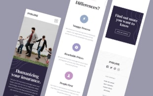
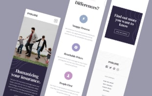

This project required me to build a fully responsive landing page
to the designs provided. I used HTML5, along with CSS Grid and
JavaScript for the areas that required interactivity, such as the
features section.
Interaction Design / Front End Development HTML / CSS / JS
Project Background
This project was a front-end challenge from Frontend Mentor. It’s
a platform that enables you to practice building websites to a
design and project brief. Each challenge includes mobile and
desktop designs to show how the website should look at different
screen sizes. Creating these projects has helped me refine my
workflow and solve real-world coding problems. I’ve learned
something new with each project, helping me to improve and adapt
my style.
 
